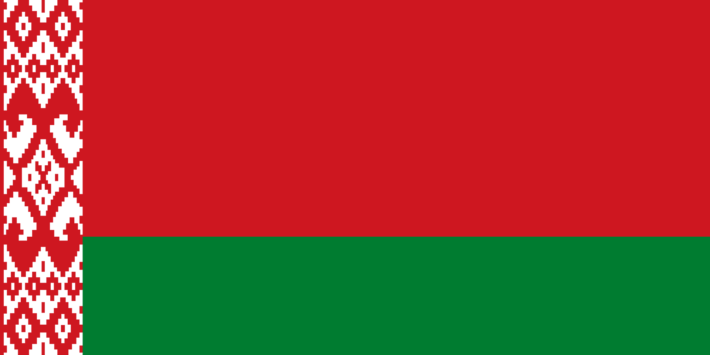
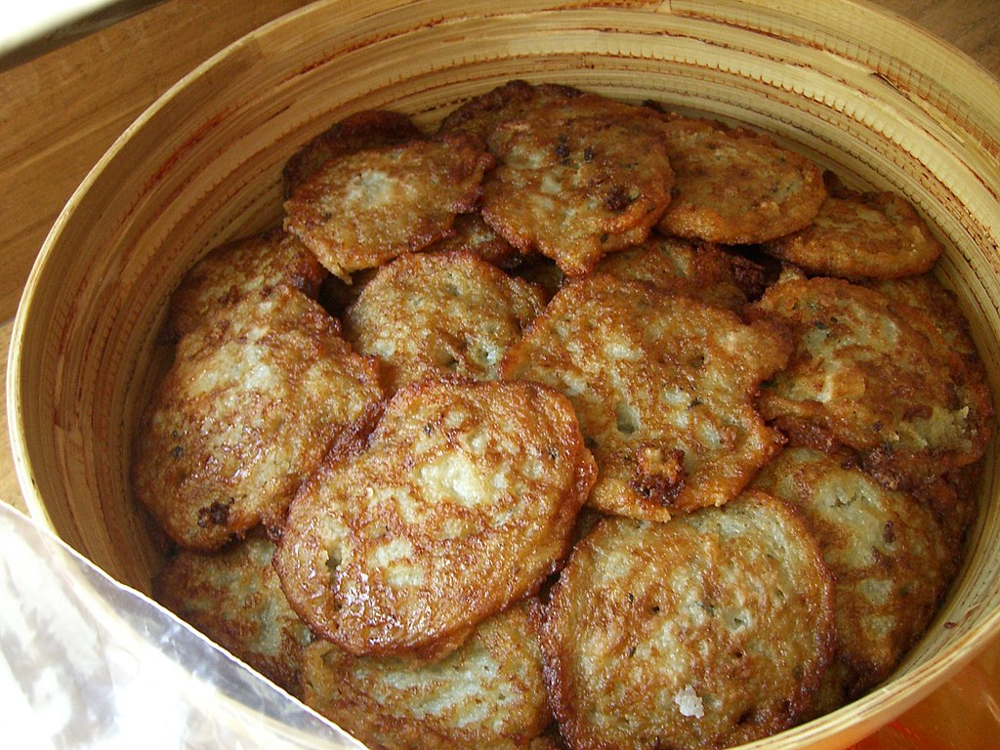

Belarus
Geographical position
Belarus, officially the Republic of Belarus,is a landlocked country in
Eastern Europe. It is bordered by Russia to the east and northeast,
Ukraine to the south, Poland to the west, and Lithuania and Latvia to
the northwest. Covering an area of 207,600 square kilometres (80,200 sq
mi) and with a population of 9.2 million, Belarus is the 13th-largest
and the 20th-most populous country in Europe. The country has a
hemiboreal climate and is administratively divided into seven regions.
Minsk is the capital and largest city.

More information
Cuisine
Belarusian cuisine consists mainly of vegetables, meat (particularly
pork), and bread. Foods are usually either slowly cooked or stewed.
Typically, Belarusians eat a light breakfast and two hearty meals later
in the day. Wheat and rye bread are consumed in Belarus, but rye is more
plentiful because conditions are too harsh for growing wheat. To show
hospitality, a host traditionally presents an offering of bread and salt
when greeting a guest or visitor. Belarusians were sometimes called
bulbashi, a pejorative conjugation of the Belarusian word for potato.

More information
Slavic Bazaar in Vitebsk
The International Festival of Arts “Slavianski Bazaar in
Vitebsk”(Belarusian: Міжнародны фестываль мастацтваў «Славянскі базар у
Віцебску»), also known as Slavic Bazaar, is an annual festival held in
Vitebsk, Belarus under the auspices of the Belarusian Government since
1992. Its main program is devoted to Slavic music. The main participants
are artists from Russia, Belarus, Ukraine, countries of the former
Yugoslavia, Poland, and Bulgaria with guests from many other countries,
both Slavic and non-Slavic.
 Slavik bazaar 2022
Slavik bazaar 2022